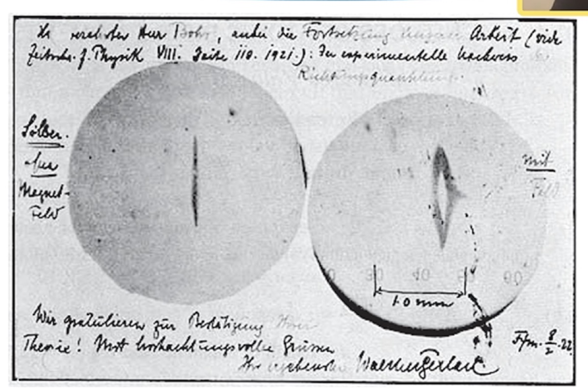

A0 · V2-A01 TYPED FIXTURE · METHOD:F0/F0− · SEARCH → MATCH → BIND → BUILD → RETURN
Matroschka
Cluster Bridge.
Das fehlende Bindeglied wird als endlicher, prüfbarer Pilot gebaut: ein deklarierter Triple‑Six-Träger, drei lokale Cluster, eine Geosphere mit Riemann-Karte, die vorhandene F0/F0−-Nullfuge, ein getrennter Q°-Messzustand und ein Return, der den beim Normieren verlorenen Radius als Witness verlangt.
MATROSCHKA CARRIER WINDOW · NESTED RECORDS
Die Schalen tragen Riemann — nicht umgekehrt.
Adresse, Cluster, Cube und Geosphere liegen als getypte Träger ineinander. Erst außerhalb dieser Schalen entstehen Riemann-Karte und Q°-Beobachtung; der Return durchläuft die Schichten zurück bis zum unveränderten Adressrecord.
1 ADDRESS⊂2 CLUSTER⊂3 CUBE⊂4 GEOSPHERE + ρ→VIEW RIEMANN / Q°↩HERE RETURN
Visual boundary: Die goldene Spiral-/„Föhn“-Linse übersetzt die Formensprache der Owner-Visuals in eine Präsentationsansicht. Sie ist kein zusätzlicher Operator, kein physikalischer Wirbel und kein Evidenzbeleg für die Carrier-Hierarchie.
3D SOURCE LENS · ASSET-E78DF8527C6B · RUNTIME DERIVATIVE R1
Die Perle im Träger: Q‑Core → Triple Wheel → Ladder.
Das vorhandene Atomic‑Matroschka‑GLB wird als räumliche Lesart an dieselbe fünfteilige Snap-Sequenz gebunden. Der Q‑Space Core atmet leicht; Proton-, Neutron- und Electron-Wheel laufen mit getrenntem Vorzeichen beziehungsweise Tempo. Die Leiter bleibt der sichtbare Übergangsträger.

HISTORICAL MEASUREMENT WITNESS · SOURCE-BOUND CONTEXT
Der reale Riss: ein Strahl, zwei diskrete Spuren.
Links bleibt der Silberatomstrahl ohne Magnetfeld als einzelne Spur sichtbar. Rechts übersetzt das inhomogene Magnetfeld die diskrete Komponente des magnetischen Moments entlang der Messachse in zwei getrennte Ablagerungen. Das ist der historische Nachweis der Richtungsquantelung — nicht eine Bestätigung der Matroschka-Bridge.
CARRIER
ein Silberatomstrahl
→
ZIPPER / ∇B
Orientierung wird räumlich getrennt
→
BUTTON / WITNESS
zwei Auftreffspuren
Unsere Design-Linse: Knopf und Zipper an der „501 Blue Jeans“.
Der Zipper ist die Übergangsapparatur: Er macht eine zuvor interne Orientierung als getrennten Pfad sichtbar. Der Knopf ist der gespeicherte Auftreffpunkt — der Witness, an dem die Messung festgehalten wird. Die Jeans ist der gemeinsame materielle Carrier. Das ist eine erklärende Analogie für Seam, Split und Return; sie ersetzt weder das Experiment noch dessen Quantentheorie.
Source boundary: Kontextvergleich · keine Gleichsetzung · keine neue Physik · keine Publikationsfreigabe des Bildes.
A₁ · 90° · det +1
Lokaler Frame 1
A₂ · 180° · det +1
Lokaler Frame 2
A₃ · 270° + FLIP · det −1
Klein-Schritt
ILAU · PRESERVED
Adresse durch Witness
Cluster, Geosphere, Riemann-Karte und Matrixframe bleiben getrennte Records. Mit ρ und inverser Operatorreihenfolge kehren alle 216 Adressen exakt zurück.
ILAU · LOST
Radius beim Normieren
u → u/‖u‖ verliert die radiale Lage. Der negative Kontrollpfad verwirft ρ und erzeugt einen messbaren Return-Fehler.
ILAU · UNRESOLVED
Historischer Generator
Z₆³ ist der deklarierte Pilot, nicht die Rekonstruktion des historischen Triple‑Six Gate-Hit-Generators und keine natürliche Cluster- oder Riemann-Gesetzmäßigkeit.
Claim ceiling: endliches, deterministisches Mathematik-/Engineering-Fixture auf etablierter Algebra, Sphäre und stereographischer Projektion.
101 ist ein getyptes Adress-Token; D:(1,0,1) → 1.1 ist eine deklarierte Anzeigeabbildung und keine numerische Gleichsetzung. 1:2:1 bleibt ein Display-Label. METHOD:F0/F0− ist die vorhandene Nullfuge desselben Trägers — weder CF:F0 noch CF:F8. NE¥AH / N exiT° ist das sichtbare Exit-Glyph des 270°-Snaps, kein neuer Navigator-Alias. Kein Riemann-Hypothesen-Claim, keine historische Triple‑Six-Rekonstruktion, keine neue Physik, keine Study- oder Finding-Promotion.